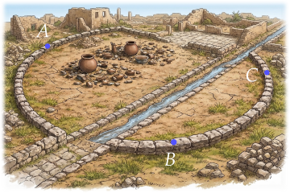

Câu 6. Đại số
Phần I — Trắc nghiệm chọn một phương án
0,25 điểm
Một cửa hàng tiện lợi phục vụ thực đơn bữa sáng gồm $2$ món chính là bánh mì (B), xôi (X) và $3$ đồ uống là sữa (S), trà (T), cà phê (C). Xét phép thử chọn ngẫu nhiên một combo gồm một món chính và một đồ uống. Không gian mẫu của phép thử trên là
Câu 13. Đại số
Phần II — Trắc nghiệm đúng hoặc sai
1 điểm
Một tiệm cây cảnh trưng bày $10$ chậu cây mini khác nhau, bao gồm $6$ chậu sen đá và $4$ chậu xương rồng. Một khách hàng ghé tiệm để chọn mua cây trang trí.
(Nhấp vào ô màu vàng để chọn đúng / sai)
Mỗi ý a), b), c)… là một phát biểu độc lập: nhấp vào ô để chọn Đúng/Sai,
0,25 điểm mỗi ý.
Câu 14. Hình họcKhông vẽ hình
Phần II — Trắc nghiệm đúng hoặc sai
1 điểm
Trong một hệ thống định vị vô tuyến, hai trạm phát tín hiệu $A$ và $B$ đặt cách nhau $300$ km. Một con tàu nhận được tín hiệu từ hai trạm này và các thiết bị trên tàu tính toán được rằng: hiệu khoảng cách từ tàu đến trạm $A$ và từ tàu đến trạm $B$ luôn cố định là $180$ km. Giả sử con tàu luôn di chuyển sao cho hiệu khoảng cách này không đổi. Thiết lập hệ trục tọa độ $Oxy$ sao cho $A, \, B$ nằm trên trục $Ox$ và gốc tọa độ $O$ là trung điểm của $AB$ .
(Nhấp vào ô màu vàng để chọn đúng / sai)
Mỗi ý a), b), c)… là một phát biểu độc lập: nhấp vào ô để chọn Đúng/Sai,
0,25 điểm mỗi ý.
Câu 15. Đại số
Phần III — Trắc nghiệm trả lời ngắn
0,5 điểm
Một chủ nhà vườn đang vào vụ thu hoạch táo. Hiện tại, nếu bán lẻ với giá $120$ nghìn đồng/thùng thì trung bình mỗi ngày nhà vườn xuất bán được $50$ thùng táo. Qua quá trình kinh doanh, chủ vườn nhận thấy quy luật thị trường như sau: nếu cứ giảm giá bán đi $2$ nghìn đồng cho mỗi thùng táo, thì mỗi ngày nhà vườn sẽ thu hút thêm khách và bán tăng thêm được $1$ thùng. Biết rằng để thu được tổng doanh thu mỗi ngày cao nhất thì chủ vườn cần bán ra tổng cộng $a$ thùng táo, và khi đó mức doanh thu đạt $b$ nghìn đồng. Giá trị của biểu thức $H = b - 100a$ bằng bao nhiêu?
Trả lời ngắn — gõ kết quả, kèm đơn vị nếu đề hỏi đơn vị.
Câu 16. Đại số
Phần III — Trắc nghiệm trả lời ngắn
0,5 điểm
Trong một trò chơi lập trình, robot xuất phát từ điểm $O(0; 0)$ di chuyển qua $3$ lệnh: sang phải $4$ đơn vị, lên trên $5$ đơn vị, và sang trái $2$ đơn vị để dừng tại điểm $M$ . Tại điểm dừng $M$ , robot nhận lệnh tiếp theo là di chuyển dọc theo một đường thẳng $d$ để đi đến trạm sạc dự phòng $A(1; 3)$ . Biết phương trình đường thẳng lộ trình $MA$ có dạng $ax + by + 2 = 0$ . G iá trị của biểu thức $B = a^2 - 5b$ bằng bao nhiêu?
Trả lời ngắn — gõ kết quả, kèm đơn vị nếu đề hỏi đơn vị.
Câu 17. Đại số
Phần III — Trắc nghiệm trả lời ngắn
0,5 điểm
Cho khai triển nhị thức Newton $(ax + b)^4= 16x^4 - 96x^3 + 216x^2 - 216x + m$ , với $m$ là tham số và $a, b ∈ ℝ$ , $a\gt 0$ . Giá trị của $m$ bằng bao nhiêu?
Trả lời ngắn — gõ kết quả, kèm đơn vị nếu đề hỏi đơn vị.
Câu 18. Đại số
Phần III — Trắc nghiệm trả lời ngắn
0,5 điểm
Một câu lạc bộ Sách của trường chỉ gồm các học sinh khối 10 và đúng $5$ học sinh khối 11. Nhân dịp hưởng ứng "Ngày Sách và Văn hóa đọc Việt Nam" ($\frac{21}{4}$), mỗi thành viên trong câu lạc bộ đều viết một tấm thiệp nhỏ ghi lại một trích dẫn sách yêu thích để gửi tặng cho từng người còn lại trong câu lạc bộ. Quản trị viên thống kê được: tổng số thiệp được trao đổi nội bộ giữa các bạn khối 10 với nhau nhiều hơn tổng số thiệp được trao đổi qua lại giữa các bạn khối 10 và khối 11 là $180$ chiếc. Câu lạc bộ đã trao đổi tổng cộng bao nhiêu tấm thiệp?
Trả lời ngắn — gõ kết quả, kèm đơn vị nếu đề hỏi đơn vị.
Câu 19. Hình họcKhông vẽ hình
Phần IV — Tự luận
1 điểm
Trong mặt phẳng với hệ tọa độ $Oxy$ , cho điểm $A(2; 0)$ và đường thẳng $\Delta$ có phương trình $x - y + 1 = 0$ . Tìm tọa độ điểm $M$ thuộc đường thẳng $\Delta$ sao cho đường thẳng $MA$ tạo với đường thẳng $\Delta$ một góc $45°$ .
Bài làm của bạn:
Câu 20. Đại số
Phần IV — Tự luận
1 điểm
Để chuẩn bị cho một nhiệm vụ thám hiểm sao Hỏa, các kỹ sư cần chọn ra một bộ gồm $5$ chip cảm biến từ một hộp linh kiện dự phòng gồm $11$ chip, trong đó có $7$ chip xử lý hình ảnh và $4$ chip cảm biến nhiệt. Do hạn chế về năng lượng tiêu thụ, hệ thống điều khiển yêu cầu bộ chip được chọn phải có nhiều nhất $3$ chip xử lý hình ảnh. Tính xác suất để bộ cảm biến được chọn thỏa mãn yêu cầu kỹ thuật trên.
Bài làm của bạn:
Câu 21. Hình họcCó vẽ hình
Phần IV — Tự luận
1 điểm
Trong một đợt khai quật khảo cổ, các nhà khoa học xác định được một khu vực chứa các mảnh vỡ gốm cổ nằm trong một phạm vi hình tròn $(C)$ . Ranh giới của khu vực này đi qua ba cột mốc đánh dấu là $A(9; 8)$ , $B(-7; 8)$ và $C(1; -8)$ trên bản đồ tọa độ $Oxy$ (đơn vị tính là mét). Một đường rãnh thoát nước bảo vệ di tích được đào chạy thẳng qua khu vực này theo đường thẳng $d$ có phương trình $3x + 4y + 19 = 0$ (tham khảo hình vẽ bên dưới).

Tính chiều dài của đoạn đường rãnh thoát nước nằm phía trong vùng chứa cổ vật.